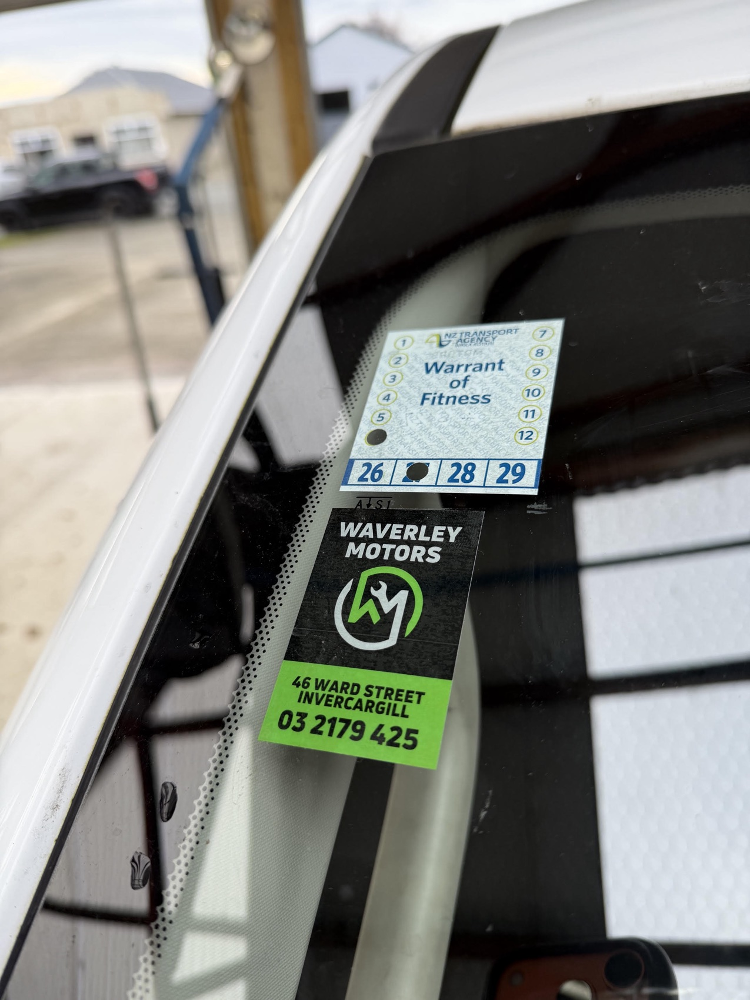
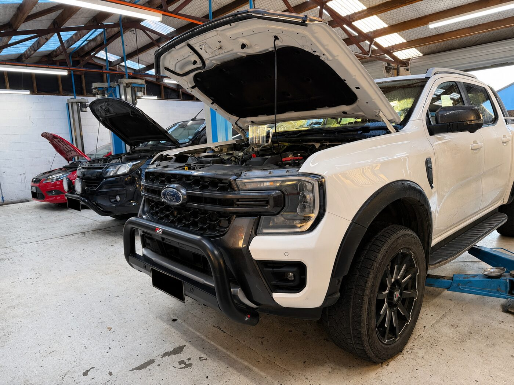
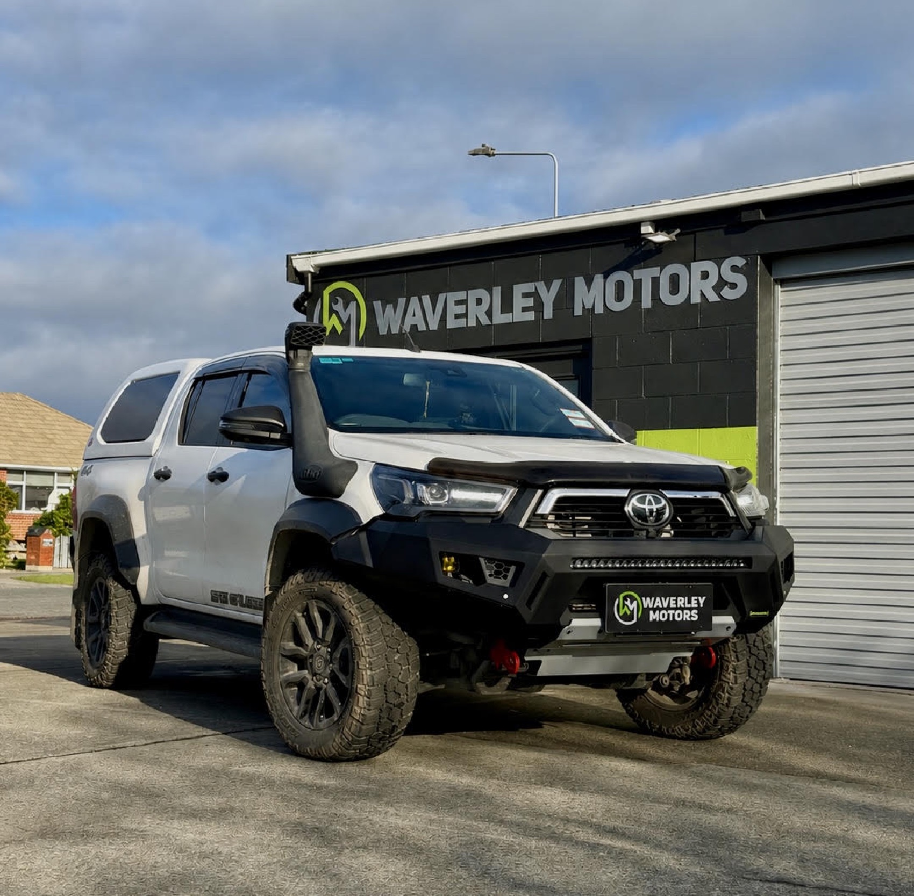
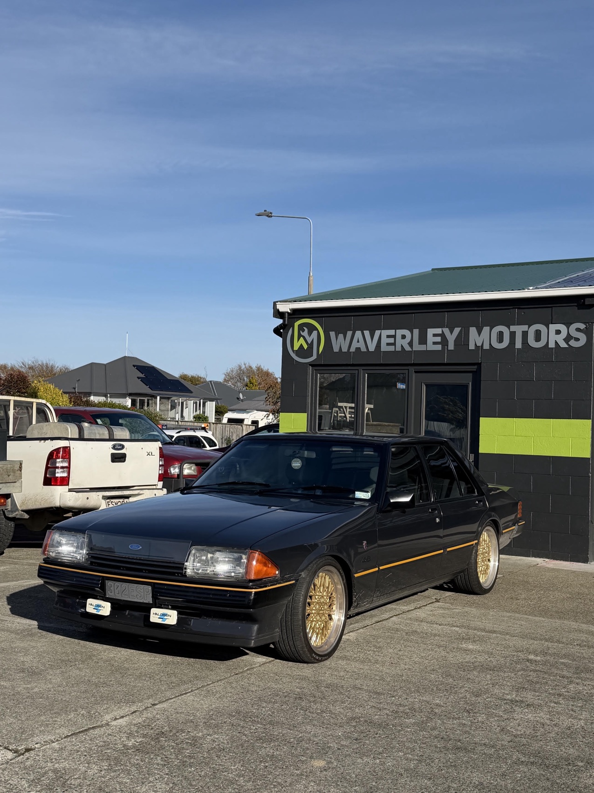
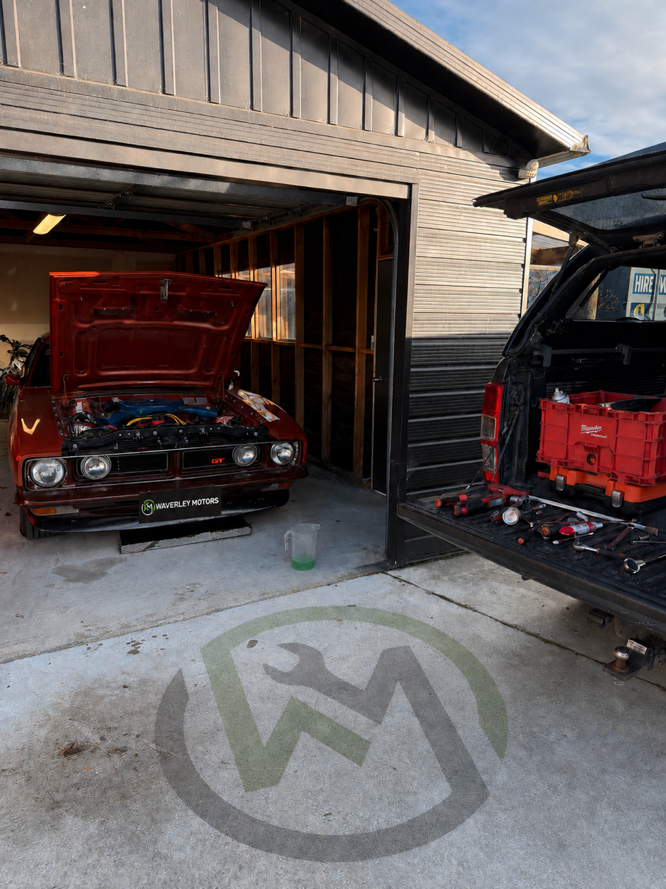
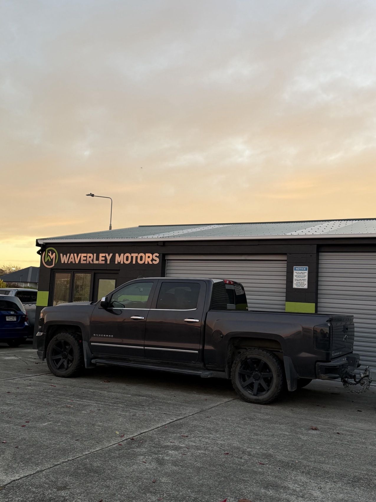
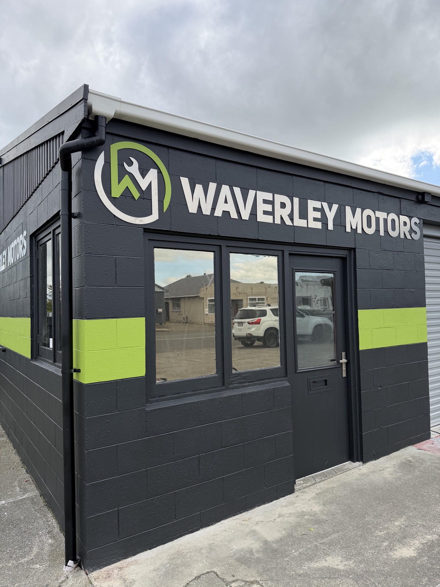

From WOF inspections and routine servicing to diagnostics and major repairs, we're here to keep your vehicle safe, reliable and ready for the road.
"The BEST in Invercargill. Friendly, honest and go the extra mile to help their customer. Fair pricing. Highly recommended!"
Trusted local mechanics delivering quality workmanship and reliable service for every vehicle you drive.

Warrant of Fitness checks done thoroughly and honestly. If it fails, we'll tell you exactly what's needed to pass.

Routine servicing to keep your vehicle reliable, efficient and performing at its best.

Quality brake and suspension repairs to keep your vehicle safe on the road.

Accurate fault diagnosis, auto electrical repairs and installations for all makes and models.

We can bring the workshop to you, providing convenient on-site servicing and repairs where practical.

The bigger jobs done right — timing belts, water pumps and clutch replacements to keep you off the tow truck.
Waverley Motors is a locally owned and operated workshop in Invercargill, providing quality servicing, repairs and WOF inspections for all vehicle makes and models. Whether it's routine maintenance, a failed WOF or a more complex repair, we'll give you honest advice, clear communication and quality workmanship every step of the way.
No unnecessary upselling, just the right repairs to keep your vehicle safe, reliable and ready for the road.

Real reviews from the locals who trust us with their vehicles, straight from our Google Business Profile.
"I have had a very good experience with them over the last three years. I always take my car there for servicing and other related work. They consistently provide high-quality service and ensure customer satisfaction. Very pleased with their professionalism and excellent service. Thank you Waverley Motors team."
"Best WOF place in Invercargill. Me and my family have been taking our vehicles here for years and always had good reliable service. Will keep coming here for years to come."
"The BEST in Invercargill. They are friendly, honest and go the extra mile to help their customer. Fair pricing. Highly recommended!"
"Very awesome garage who tells it like it is and doesn't rip you off. Staff are always helpful and very friendly and welcoming."
"Great mechanics, very fair prices, and can't forget the great customer service by Bronwyn."
"Great friendly service. You can trust the team here!!"
It takes 30 seconds and helps other Southland drivers find an honest workshop. We'd really appreciate it.
Leave a ReviewPick a service and a time that suits you — our online booking system goes straight through to the workshop.
Give us a call or flick an email — tell us the make, model and what's going on, and we'll get you sorted.
Pop in during the week or book ahead — we'll always try to fit in an urgent warrant or repair.